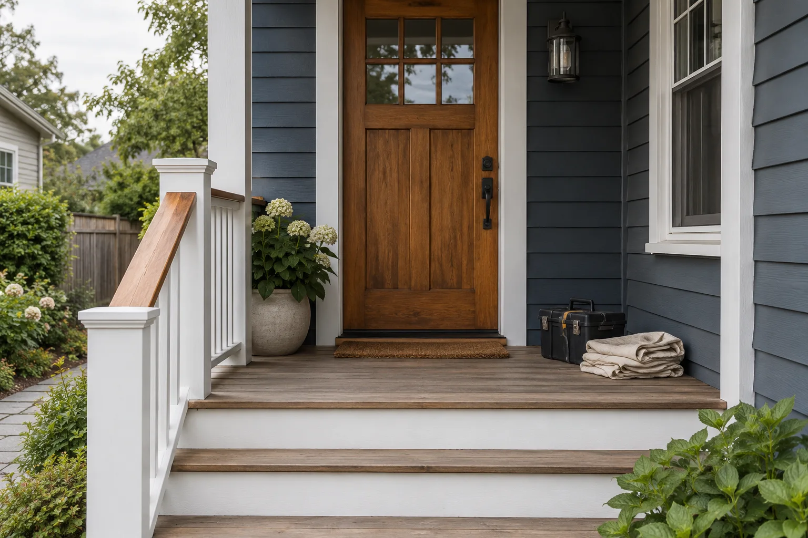

Home repairs · routine upkeep
Home repairs and maintenance, made straightforward.
From a sticking door to a short list of seasonal tasks, get help defining the work and what should happen next.
Request an estimate
Services
View all services →
What needs attention?
How it works
A clear scope before work begins.
- 01Share the detailsTell us what needs attention and where it is in the home.
- 02Confirm the workReview which tasks fit and agree on the scope and timing.
- 03Plan the next stepKnow what is included and what, if anything, needs a specialist.
Service coverage
Check whether your address is covered.
Service availability depends on the address and the type of work. Share your town or ZIP code and we can confirm whether a visit is a fit before making plans.
Ask about your address